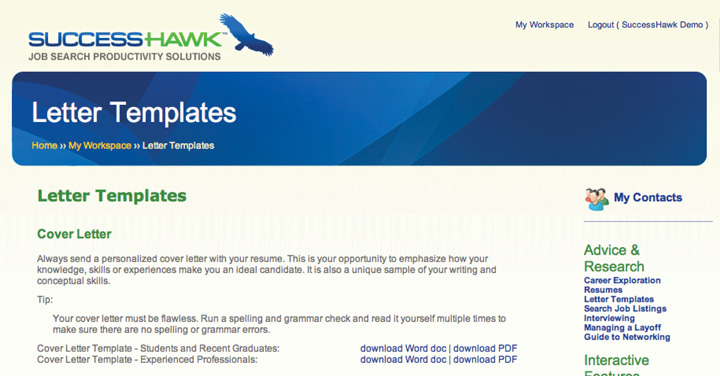
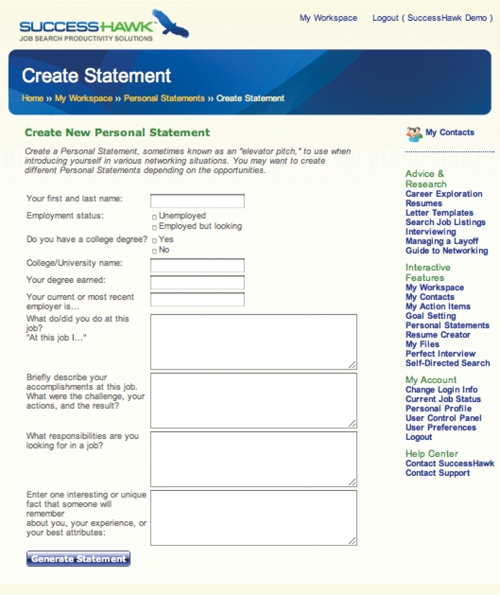

5.4 Chapter Review and Exercises
Creating a compelling marketing campaign is a vital step in your job search because it markets your skills and abilities to future employers, in most cases, before you meet them. The four components of this step are the following:
- Creating a résumé
- Writing a cover letter
- Creating an online profile
- Composing a pitch
Your marketing campaign will be more effective when you are more specific, targeted, and thoughtful of how to construct your marketing campaign elements:
- Your résumé will prove your success with your past employers, which then proves your worth to your future employers.
- Your cover letter makes the case for why you should be hired because it highlights the two or three critical skills necessary to succeed in the job you are seeking.
- Your online profile works behind the scenes to ensure you are seen by recruiters who seek talent. In addition, your profile provides a great way to stay connected with your network.
- Your pitch allows you to introduce yourself in a clear and concise way, highlighting the strengths you have that will enable you to succeed.
Remember that the better you market yourself, the more successful your job search will be. Apple’s marketing campaign leaves no doubt about the quality of what they offer. You should do the exact same!
The next step, step 3, is research, which will help you gather vast amounts of information about your industry, your function, your geography, and the companies you are targeting.
Chapter Takeaways
- Creating a compelling marketing campaign is vital to your job search and is composed of four things: a résumé, a cover letter, an online profile, and a pitch.
- Your marketing campaign must have high-quality standards because it represents you when you are not there.
- Even though some recruiters do not read cover letters, it is always worthwhile to write a compelling cover letter, just in case the recruiter who reviews your information values them.
- You should do five things before writing a cover letter: (1) assess your strengths, (2) assess your weaknesses, (3) decipher the job description, (4) compare your strengths, weaknesses, and the job description for alignment, and (5) select the top three skills you will include in your cover letter.
- The cover letter template includes three sections: (1) the introductory paragraph, (2) the last paragraph, which reiterates your interest, and (3) the magic middle (which highlights your top three skills).
- Your online profile serves two functions: (1) it’s a passive job search strategy because recruiters search online profiles, and (2) it’s a great networking tool because you can connect with friends, family, former coworkers, and current schoolmates and stay in touch with them easily regardless of where you or they live or work.
- A pitch should be short (less than one minute), concise, and include the following: (1) your educational background, (2) any pertinent experience in the field in which you are interested, (3) your critical skills and strengths, (4) what you want to do, and (5) why you would be good at it.
Chapter Review
- Why is quality so important when crafting a marketing campaign?
- Why is it important to assess your strengths and weaknesses when preparing to write a cover letter?
- Why do you need a cover letter when some recruiters don’t read them?
- How do you decipher a job description? How do you identify most important criteria needed for this position?
- What are the three main parts of a cover letter?
- What are the two main benefits to having an online profile?
- What is the minimum to get started with an online profile? What are some useful additional features?
- Why is a pitch important to your job search?
- What components are included in your pitch?
- Why should your pitch be short?
- Why do you have to practice your pitch?
SuccessHawk: Cover Letters
To get started on preparing cover letters, thank-you notes, and references, go to the menu bar on the right and click on Letter Templates.

SuccessHawk: Networking Pitch
For assistance in writing your personal statement, go to the menu bar on the right, and click on Personal Statements.
